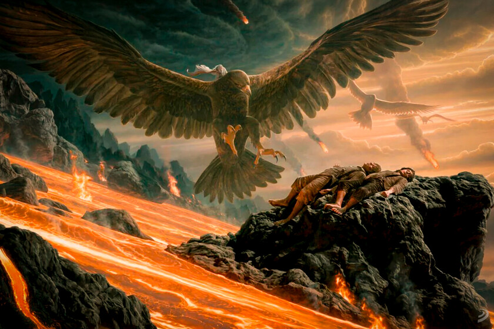

El Misterio de las Águilas: ¿Por qué no volaron directamente al Monte del Destino?

Es, sin lugar a dudas, la pregunta más repetida e icónica por los fans que descubren la obra de J.R.R. Tolkien: ¿Por qué Gandalf y la Comunidad no utilizaron a las Grandes Águilas de Manwë para volar sobre Mordor y arrojar el Anillo Único de forma rápida y sencilla?
Aunque en las adaptaciones cinematográficas de Peter Jackson pueda parecer un "vacío de guión", la realidad dentro de los libros y las cartas de Tolkien nos ofrece una explicación teológica, militar y estratégica profundamente justificada.
1. Las Águilas no son taxis: Son seres divinos
El primer error común es tratar a las Grandes Águilas como meras monturas o animales de carga. En el universo de Arda, las Águilas son mensajeras y sirvientas directas de Manwë Súlimo, el Rey de los Valar. Tienen su propio orgullo, su propio idioma y una inteligencia superior. No obedecen las órdenes de los hombres ni de los elfos; actúan únicamente bajo la voluntad divina de los dioses cuando el equilibrio del mundo corre peligro extremo.
2. El Ojo de Sauron y la superioridad aérea de Mordor
Intentar un ataque aéreo directo contra Mordor habría sido una misión suicida de proporciones épicas. Mordor no estaba indefensa. Sauron controlaba un ejército masivo que incluía miles de arqueros orcos armados, ballestas de asedio y, lo más peligroso de todo: los Nazgûl a lomos de sus terroríficas Bestias Aladas. Una bandada de águilas aproximándose a la frontera habría sido detectada a cientos de kilómetros por el Ojo, perdiendo por completo el único factor que le daba una oportunidad a la misión: el secreto absoluto.
3. La tentación del Anillo Único
El Anillo Único corrompe a los seres en proporción a su poder natural. Es la razón por la que Gandalf o Galadriel se niegan rotundamente a tocarlo. Las Grandes Águilas son criaturas inmensamente poderosas y antiguas. Si el Anillo hubiera viajado a lomos de Gwaihir (el Señor de los Vientos), el artefacto habría intentado corromper su mente. Un "Señor de las Águilas" corrompido por el poder de Sauron habría sido un desastre catastrófico e imparable para los Pueblos Libres.
En conclusión, la misión del Portador del Anillo requería sigilo, humildad y pasar desapercibido entre las sombras de Mordor, algo que unas criaturas majestuosas y gigantescas jamás habrían podido lograr.